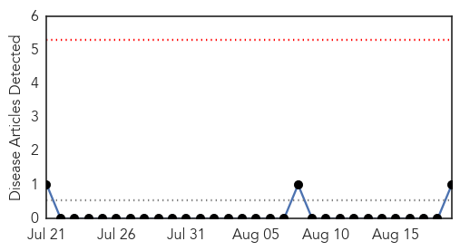
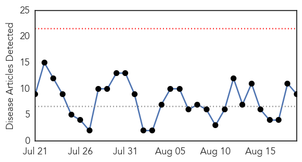
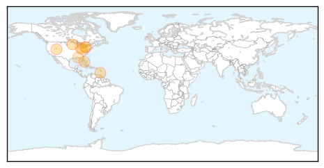
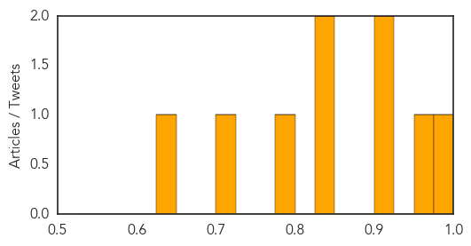

Yellow Fever
30-Day Web Trend
0 alerts, 0 warnings

30-Day Twitter Trend
0 alerts, 0 warnings

Article Locations

Article Confidences

Top Articles:
Top Tweets:
-
No tweets found for Aug 19, 2015
West Nile Virus
30-Day Web Trend
0 alerts, 0 warnings

30-Day Twitter Trend
0 alerts, 0 warnings

Article Locations
Article Confidences
Top Articles:
- 0.992
- This year’s first human cases of West Nile virus reported in Minnesota
- 0.966
- Chicken flock at Stansbury tests positive for West Nile virus « Tooele Transcript Bulletin – News in Tooele, Utah
- 0.912
- Indiana confirms first human West Nile virus case for 2015
- 0.906
- West Nile found in mosquitoes in North Kingstown
- 0.847
- Tomorrow: Southern Brooklyn To Be Sprayed For West Nile-Carrying Mosquitoes
- 0.847
- One confirmed death caused by West Nile Virus in Williams County
- 0.794
- First West Nile death reported in Ohio
- 0.721
- Second West Nile Case Confirmed In Escambia County
- 0.642
- ALERT – Midwood, Flatbush, Marine Park To Be Sprayed For Mosquitos / West-Nile Virus – The Yeshiva World
Top Tweets:
-
No tweets found for Aug 19, 2015